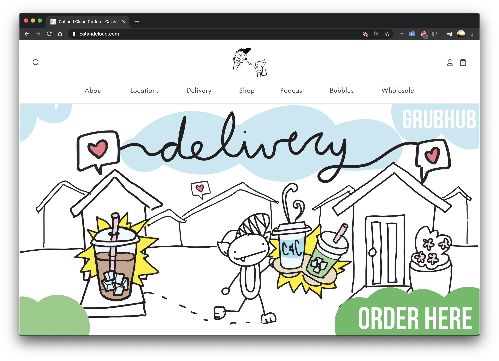
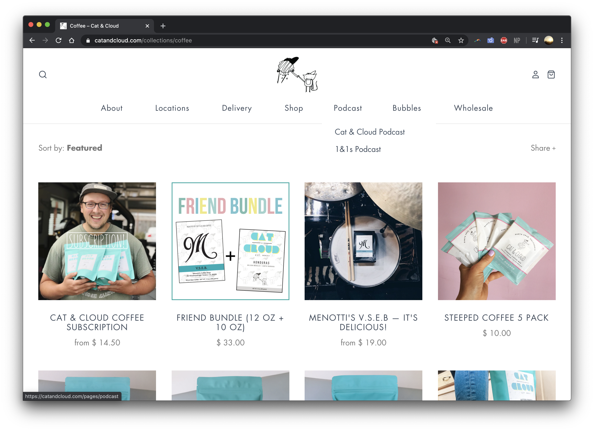
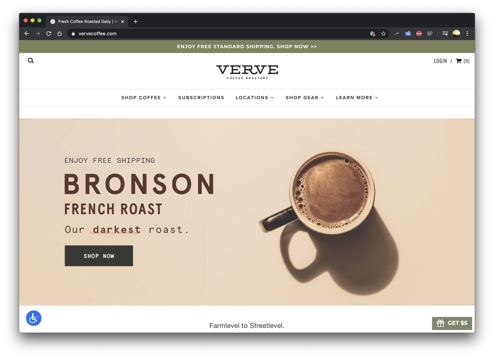
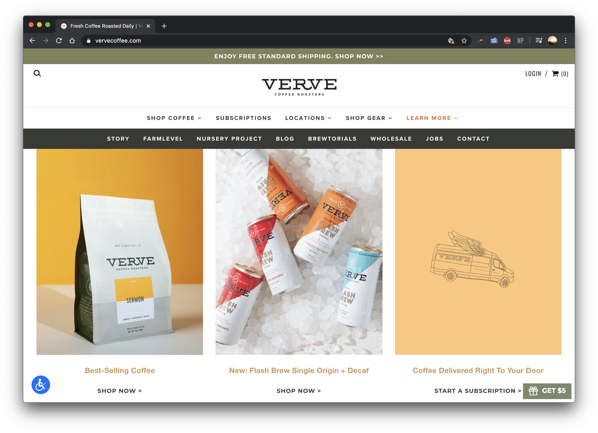
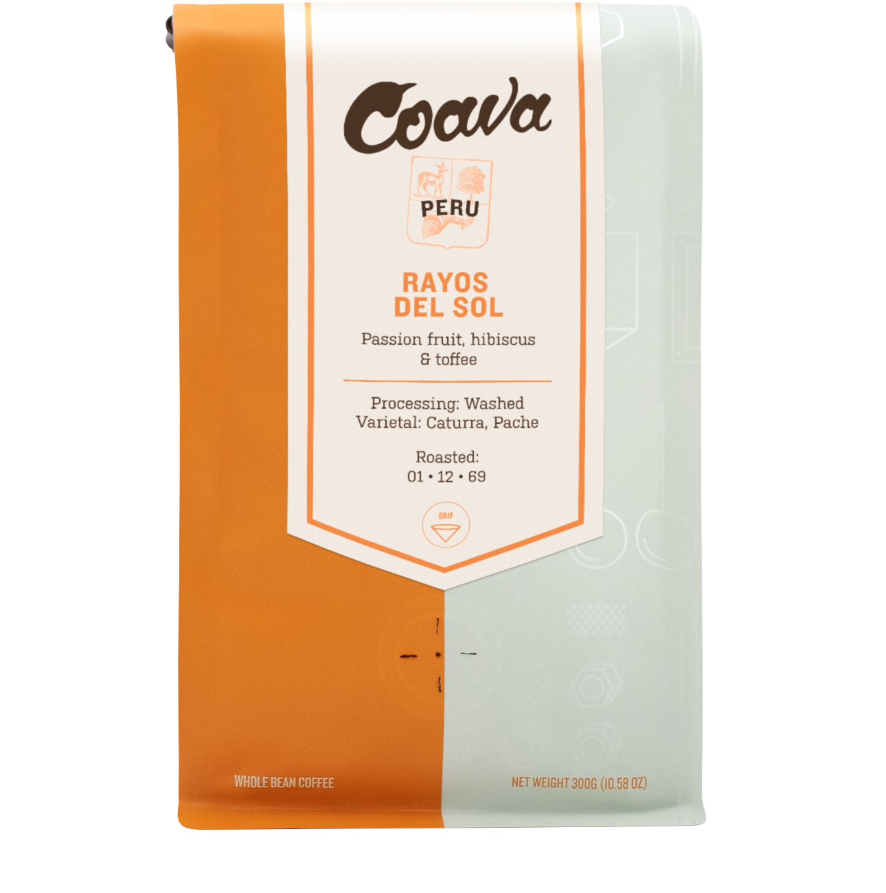
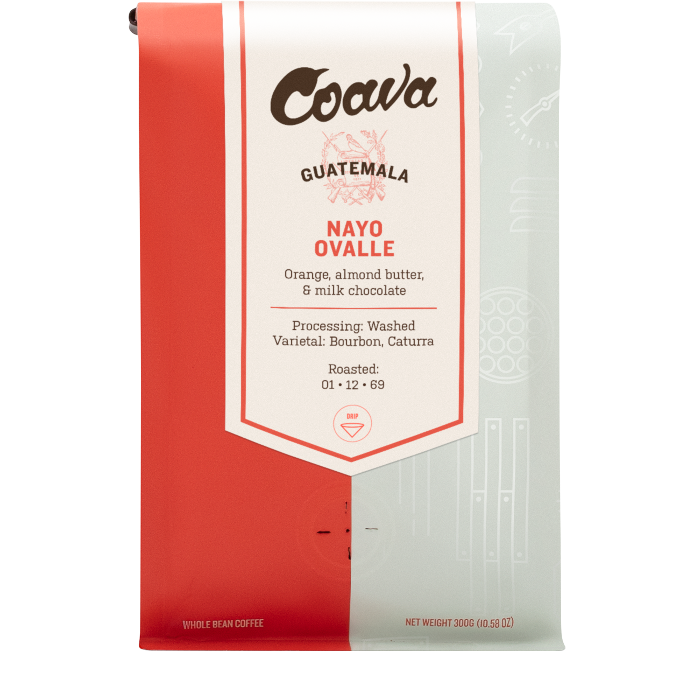
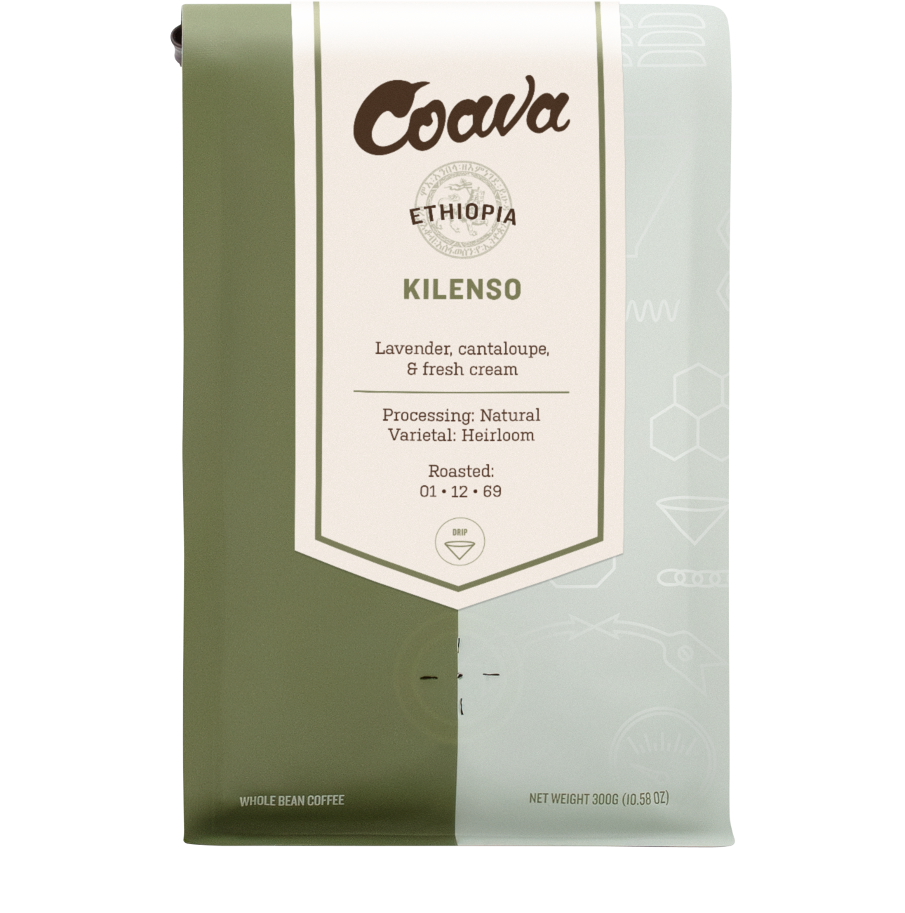

Final project proposal
Introduction
Jarhead Coffee
Always fresh. always exceptional. Always friendly. Jarhead Coffee contributes to the Sactown coffee scene using Coava's single origin coffee beans. With a focus on sustainability and quality, Jarhead aspires to bring socially responsible and honest coffee to you.
Target audience
The target audience for Jarhead Coffee ranges from your average coffee date to your coffee connoisseur. Jarhead coffee brings quality and expertise, while still being able to be a great place for people to meet up. The demographics that Jarhead targets are people from ages 18 to 35. Jarhead Coffee's website will be used for customers and business partners. The website will help inform the target audience about the coffee shop's characteristics and values, and will promote the shop's products and services.
Jarhead Coffee's website will be used for people who are interested in knowing more about the company's origins and for people who would like to reach out for business inquiries. People who view this site will want to visit the coffee shop or will want to contact the company for business inquiries.
Comparative analysis
Temple Coffee


Cat and Cloud
 Verve Coffee
 Website content
Jarhead • Home
Always fresh. always exceptional. Always friendly. Jarhead Coffee contributes to the Sactown coffee scene using Coava's single origin coffee beans. With a focus on sustainability and quality, Jarhead aspires to bring socially responsible and honest coffee to you.
[Outside of establishment]
[Inside of establishment]
[Coffee being made]
[Lotte art]
[Coffee beans]
Jarhead • Shop
-
Peru
Passion fruit, hibiscus, and toffee
$17
 -
Guatemala
Orange, almond butter, and milk chocolate
$19
 -
Honduras
Red currant, brandy, and baker's chocolate
$18
-
Ethiopia
Lavender, cantaloupe, and fresh cream
$19

[Coffee being served]
[Coffee in a cup]
[Pour over]
Jarhead • About
Our vision is to help cultivate a modern coffee community. We believe that every person is responsible for how coffee is changing. Whether you're roasting, farming or drinking, we believe that we can create a community that embraces equity, honesty, and quality.
We want to create a culture that sees the importance in conversations or experiences that are cultivated over a cup of coffee. Who did you go with? What did you talk about? Or maybe you were taking a solo trip. What headspace were you in? Perhaps you took your coffee to-go. You found yourself in a rush, but not rushed enough to ignore the bliss of our coffee!
Established in 2010, Jarhead aspires to bring quality coffee to all types of people—encouraging community with others and the slow paced leisure of sitting in a coffee shop.
[Coffee and a book]
[Owner]
Jarhead • News
During COVID-19, we are thankful to our customers, team members, and community at large for their continued support and understanding as we all navigate this time together. Jarhead Coffee has always been a safe space for our guests and team members, and it is our top priority to ensure the safety, health, and wellbeing of everyone in our community. We love and appreciate you all, and as such we have taken extra steps to help keep you safe amidst the current public health situation. We are offering pick-up services during this time with modified seating to encourage social distancing. We are also implementing disposable-only cups to ensure sanitation and safety for all customers.
[Customer drinking coffee]
Jarhead • Contact Us
1501 G St, Sacramento, CA 95814
916.555.0125
Monday-Friday 7am-10pm
Saturday-Sunday 9am-10pm
[Coffee Mugs]